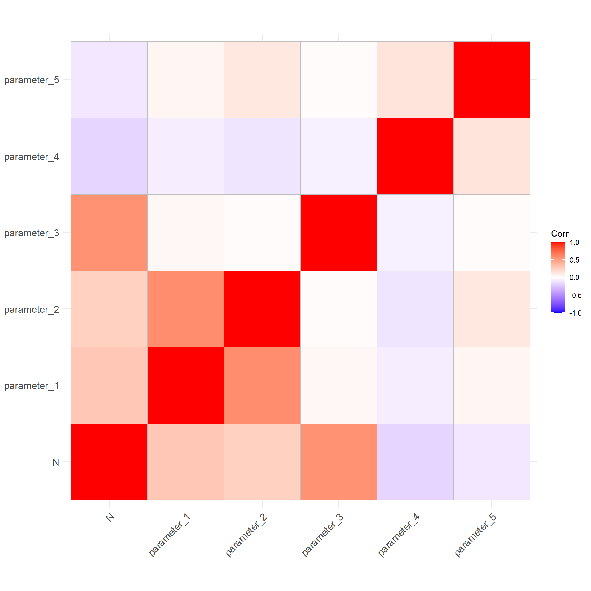
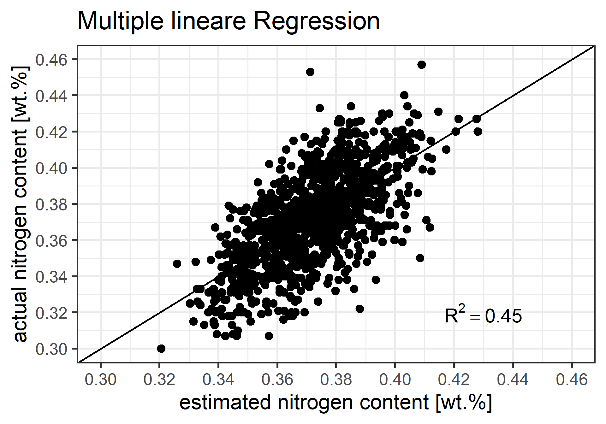
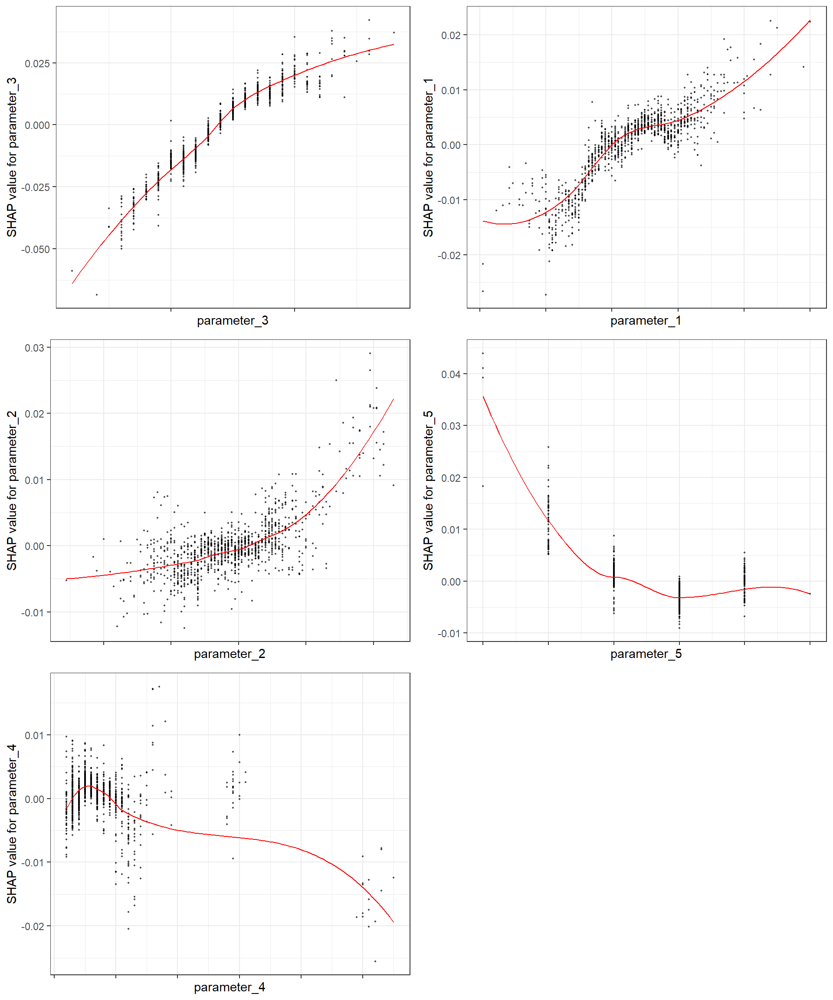

High nitrogen alloyed stainless steels
Nitrogen-alloyed stainless steels are special grades that are particularly used in the aerospace, energy, and medical sectors. Nitrogen, as a key alloying element, provides the material with high tensile strength, improves corrosion resistance, and stabilizes the formation of an austenitic microstructure.
However, nitrogen has a low solubility in molten steel or iron (maximum approximately 0.04 wt-%). Higher nitrogen levels can be achieved by alloying with elements such as chromium, manganese, or molybdenum, which increase the solubility of nitrogen in molten steel. Another approach to retain nitrogen in molten steel is to increase the nitrogen partial pressure in the furnace. Energietechnik Essen GmbH (ETE) operates a pressure-electroslag-remelting (PESR) furnace to enhance the nitrogen content in stainless steels.
Analysis of process parameters in PESR
The production of nitrogen-alloyed stainless steels requires in-depth knowledge of the entire process. Understanding the relationship between process parameters and nitrogen content is crucial for manufacturing high-quality steel products.
For an initial estimation of the relationships between process parameters and nitrogen content, we use a correlation matrix (see Figure 1).
According to the correlation matrix, Variable_3 shows the strongest positive correlation with the nitrogen content in the steel. This means that the higher Variable_3 is, the higher the nitrogen content in the grade. Conversely, as Variable_4 increases, the nitrogen content decreases; this parameter exhibits a negative correlation with nitrogen. Variable_5 shows almost no correlation with nitrogen, suggesting it has little to no effect on the nitrogen content of the steel.
However, correlation does not imply causation. The next step will be to determine the significance of these results using an F-test for the multiple regression model.
Multiple linear regression (MLR)
In regression analysis, the ANOVA F-test is used to evaluate whether the model respectively the model-parameters significantly explains the variability in the dependent variable, we will use a significance level of 0.05.
Based on the F-statistic, the model (with a p-value < 2.2e-16) and its parameters are statistically significant.
The R² value is 0.45 for the “test.data” (quite small).
Call:
lm(formula = N ~ scale(parameter_1) + scale(parameter_2) + scale(parameter_3) +
scale(parameter_4) + scale(parameter_5), data = train.data)
Residuals:
Min 1Q Median 3Q Max
-0.070538 -0.012924 0.000669 0.013388 0.080694
Coefficients:
Estimate Std. Error t value Pr(>|t|)
(Intercept) 0.3725901 0.0004074 914.657 < 2e-16 ***
scale(parameter_1) 0.0048780 0.0004937 9.880 < 2e-16 ***
scale(parameter_2) 0.0029813 0.0004994 5.969 2.72e-09 ***
scale(parameter_3) 0.0146858 0.0004088 35.921 < 2e-16 ***
scale(parameter_4) -0.0026416 0.0004159 -6.351 2.52e-10 ***
scale(parameter_5) -0.0034257 0.0004156 -8.242 2.70e-16 ***
---
Signif. codes: 0 '***' 0.001 '**' 0.01 '*' 0.05 '.' 0.1 ' ' 1
Residual standard error: 0.02047 on 2519 degrees of freedom
Multiple R-squared: 0.4113, Adjusted R-squared: 0.4102
F-statistic: 352 on 5 and 2519 DF, p-value: < 2.2e-16# calculate R^2 for test.data
(R2 = 1 - sum((test.data$N - test.data$predict)^2) / sum((test.data$N - mean(test.data$N))^2))[1] 0.4501557Actual vs. estimated nitrogen content according to MLR

Feature importance according to MLR
Figure 3 shows the scaled coefficients of the MLR model. Variable_3 has the greatest influence on nitrogen solubility: the higher this parameter, the higher the nitrogen content in the molten steel. Conversely, the higher Variable_4 and Variable_5, the lower the solubility of nitrogen in the molten steel.

However, due to the relatively small R² value, the MLR model cannot adequately capture the deviations in the response variable (nitrogen content). Let us apply the eXtreme Gradient Boosting algorithm using the XGBoost package in R to determine whether it improves the model performance.
XGBoost
Below are the optimal cross-validation results and tuning parameters (called hyperparameters, for more information visit TuningOfParameters) for XGBoost method. Thanks to this hyperparameters the model will optimize the estimation of nitrogen content respectively the reliability of the XGBoost-model.
nrounds max_depth learning_rate gamma colsample_bytree min_child_weight
773 100 8 0.1 0 1 3
subsample reg_lambda reg_alpha iter train_rmse_mean train_rmse_std
773 1 1 0 70 0.01246913 0.0002125366
test_rmse_mean test_rmse_std
773 0.01868794 0.0005852239Actual vs. estimated nitrogen content according to XGBOOST
The R² value of 0.54 is significantly higher compared to that of the MLR model (0.45), indicating a much better fit.
Of course, this can be further improved by including additional process parameters. For the sake of simplicity, we have used only five parameters here.

Feature importance according to “Tree Shap”
The SHAP summary plot provides an excellent visualization for obtaining an overview of the effect sizes of the parameters (for more information to “SHAP for XGBoost in R” see SHAPvalues).
Similar to the MLR model, Parameter_3 is the most important process parameter for controlling the nitrogen content in the pressure-electroslag-remelting (PESR) furnace. As this parameter increases, the nitrogen content in the molten steel also increases.

The influence of individual process parameters is shown in detail below. The red line indicates the curve progression according to the XGB model, and the points represent the measured SHAP values for each process parameter. For instance, as parameter_3 (x-axis) increases, the SHAP value (y-axis) - and consequently the nitrogen content in the steel - also increases.

Conclusion
The assessment of the pressure-electroslag-remelting (PESR) process was carried out in this work using data analysis techniques, including multiple linear regression (MLR) and machine learning algorithms such as Extreme Gradient Boosting (XGB). We observed that modeling with Extreme Gradient Boosting (XGB) demonstrated superior performance and provided a more effective assessment of feature importance compared to MLR.
Data analysis is only one of the many methods we use at ETE. In the next step, we will present how we optimize individual steel grades and processes through simulation.